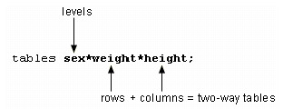
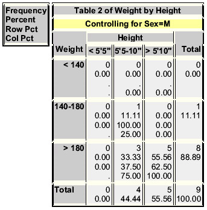

Overview
Introduction
As you have seen, one of the many features of PROC REPORT is the ability to summarize large amounts of data by producing descriptive statistics. However, there are SAS procedures that are designed specifically to produce various types of descriptive statistics and to display them in meaningful reports. The type of descriptive statistics that you need and the SAS procedure that you should use depend on whether you need to summarize continuous data values or discrete data values.
If the data values that you want to describe are continuous numeric values (for example, people's ages), then you can use the MEANS procedure or the SUMMARY procedure to calculate statistics such as the mean, sum, minimum, and maximum.
| Variable | N | Mean | Std Dev | Minimum | Maximum |
|---|---|---|---|---|---|
| Age | 20 | 47 | 13 | 15 | 63 |
| Height | 20 | 67 | 4 | 61 | 75 |
| Weight | 20 | 175 | 36 | 102 | 240 |
| Pulse | 20 | 75 | 8 | 65 | 100 |
| FastGluc | 20 | 299 | 126 | 152 | 568 |
| PostGluc | 20 | 299 | 126 | 152 | 568 |
If the data values that you want to describe are discrete (for example, the color of people's eyes), then you can use the FREQ procedure to show the distribution of these values, such as percentages and counts.
| Eye Color | Frequency | Percent | Cumalative Frequency | Cumalative Percent |
|---|---|---|---|---|
| Brown | 92 | 58.60 | 92 | 58.60 |
| Blue | 65 | 41.40 | 157 | 100.00 |
This chapter shows you how to use the MEANS, SUMMARY, and FREQ procedures to describe your data.
Objectives
In this chapter, you learn to
- determine the n-count, mean, standard deviation, minimum, and maximum of numeric variables using the MEANS procedure.
- control the number of decimal places used in PROC MEANS output.
- specify the variables for which to produce statistics.
- use the SUMMARY procedure to produce the same results as the MEANS procedure.
- describe the difference between the SUMMARY and MEANS procedures.
- create one-way frequency tables for categorical data using the FREQ procedure.
- create two-way and n-way crossed frequency tables.
- control the layout and complexity of crossed frequency tables.
Computing Statistics for Numeric Variables
Computing Statistics Using PROC MEANS
Descriptive statistics such as the mean, minimum, and maximum can provide useful information about numeric data. The MEANS procedure provides these and other data summarization tools, as well as helpful options for controlling your output.
The MEANS procedure can include many statements and options for specifying needed statistics. For simplicity, let's consider the procedure in its basic form.
General form, basic MEANS procedure:
PROC MEANS <DATA=SAS-data-set>
<statistic-keyword(s)> <option(s)>;
RUN;
where
- SAS-data-set is the name of the data set to be used.
- statistic-keyword(s) specifies the statistics to compute.
- option(s) controls the content, analysis, and appearance of output.
In its simplest form, PROC MEANS prints the n-count (number of nonmissing values), the mean, the standard deviation, and the minimum and maximum values of every numeric variable in a data set.
proc means data=perm.survey; run;
| Variable | N | Mean | Std Dev | Minimum | Maximum |
|---|---|---|---|---|---|
| Item1 | 4 | 3.7500000 | 1.2583057 | 2.0000000 | 5.0000000 |
| Item2 | 4 | 3.0000000 | 1.6329932 | 1.0000000 | 5.0000000 |
| Item3 | 4 | 4.2500000 | 0.5000000 | 4.0000000 | 5.0000000 |
| Item4 | 4 | 3.5000000 | 1.2909944 | 2.0000000 | 5.0000000 |
| Item5 | 4 | 3.0000000 | 1.6329932 | 1.0000000 | 5.0000000 |
| Item6 | 4 | 3.7500000 | 1.2583057 | 2.0000000 | 5.0000000 |
| Item7 | 4 | 3.0000000 | 1.8257419 | 1.0000000 | 5.0000000 |
| Item8 | 4 | 2.7500000 | 1.5000000 | 1.0000000 | 4.0000000 |
| Item9 | 4 | 3.0000000 | 1.4142136 | 2.0000000 | 5.0000000 |
| Item10 | 4 | 3.2500000 | 1.2583057 | 2.0000000 | 5.0000000 |
| Item11 | 4 | 3.0000000 | 1.8257419 | 1.0000000 | 5.0000000 |
| Item12 | 4 | 2.7500000 | 0.5000000 | 2.0000000 | 3.0000000 |
| Item13 | 4 | 2.7500000 | 1.5000000 | 1.0000000 | 4.0000000 |
| Item14 | 4 | 3.0000000 | 1.4142136 | 2.0000000 | 5.0000000 |
| Item15 | 4 | 3.0000000 | 1.6329932 | 1.0000000 | 5.0000000 |
| Item16 | 4 | 2.5000000 | 1.9148542 | 1.0000000 | 5.0000000 |
| Item17 | 4 | 3.0000000 | 1.1547005 | 2.0000000 | 4.0000000 |
| Item18 | 4 | 3.2500000 | 1.2583057 | 2.0000000 | 5.0000000 |
Specifying Statistics
The default statistics that the MEANS procedure produces (n-count, mean, standard deviation, minimum, and maximum) are not always the ones that you need. You might prefer to limit output to the mean of the values. Or you might need to compute a different statistic, such as the median or range of the values.
To specify statistics, include statistic keywords as options in the PROC MEANS statement. When you specify a statistic in the PROC MEANS statement, default statistics are not produced. For example, to see the median and range of Perm.Survey numeric values, add the MEDIAN and RANGE keywords as options.
proc means data=perm.survey median range; run;
| Variable | Median | Range |
|---|---|---|
| Item1 | 4.0000000 | 3.0000000 |
| Item2 | 3.0000000 | 4.0000000 |
| Item3 | 4.0000000 | 1.0000000 |
| Item4 | 3.5000000 | 3.0000000 |
| Item5 | 3.0000000 | 4.0000000 |
| Item6 | 4.0000000 | 3.0000000 |
| Item7 | 3.0000000 | 4.0000000 |
| Item8 | 3.0000000 | 3.0000000 |
| Item9 | 2.5000000 | 3.0000000 |
| Item10 | 3.0000000 | 3.0000000 |
| Item11 | 3.0000000 | 4.0000000 |
| Item12 | 3.0000000 | 1.0000000 |
| Item13 | 3.0000000 | 3.0000000 |
| Item14 | 2.5000000 | 3.0000000 |
| Item15 | 3.0000000 | 4.0000000 |
| Item16 | 2.0000000 | 4.0000000 |
| Item17 | 3.0000000 | 2.0000000 |
| Item18 | 3.0000000 | 3.0000000 |
The following keywords can be used with PROC MEANS to compute statistics:
| Descriptive Statistics | |
|---|---|
| Keyword | Description |
| CLM | Two-sided confidence limit for the mean |
| CSS | Corrected sum of squares |
| CV | Coefficient of variation |
| KURTOSIS / KURT | Kurtosis |
| LCLM | One-sided confidence limit below the mean |
| MAX | Maximum value |
| MEAN | Average |
| MIN | Minimum value |
| N | Number of observations with non-missing values |
| NMISS | Number of observations with missing values |
| RANGE | Range |
| SKEWNESS / SKEW | Skewness |
| STDDEV / STD | Standard deviation |
| STDERR / STDMEAN | Standard error of the mean |
| SUM | Sum |
| SUMWGT | Sum of the Weight variable values |
| UCLM | One-sided confidence limit above the mean |
| USS | Uncorrected sum of squares |
| VAR | Variance |
| Quantile Statistics | |
| Keyword | Description |
| P5 | 5th percentile |
| P10 | 10th percentile |
| Q1 / P25 | Lower quartile or 25th percentile |
| Q3 / P75 | Upper quartile or 75th percentile |
| P90 | 90th percentile |
| P95 | 95th percentile |
| P99 | 99th percentile |
| QRANGE | Difference between upper and lower quartiles: Q3-Q1 |
| Hypothesis Testing | |
| Keyword | Description |
| PROBT | Probability of a greater absolute value for the t value |
| T | Student's t for testing the hypothesis that the population mean is 0 |
Limiting Decimal Places
By default, PROC MEANS output uses the BEST. format to display values in the report. As the following example shows, this can result in unnecessary decimal places, making your output difficult to read.
proc means data=clinic.diabetes min max; run;
| Variable | Minimum | Maximum |
|---|---|---|
| Age | 15.0000000 | 63.0000000 |
| Height | 61.0000000 | 75.0000000 |
| Weight | 102.0000000 | 240.0000000 |
| Pulse | 65.0000000 | 100.0000000 |
| FastGluc | 152.0000000 | 568.000000 |
| PostGluc | 206.0000000 | 625.0000000 |
To limit decimal places, use the MAXDEC= option in the PROC MEANS statement, and set it equal to the length that you prefer.
General form, PROC MEANS statement with MAXDEC= option:
PROC MEANS <DATA=SAS-data-set>
<statistic-keyword(s)> MAXDEC=n;
where n specifies the maximum number of decimal places.
proc means data=clinic.diabetes min max maxdec=0; run;
| Variable | Minimum | Maximum |
|---|---|---|
| Age | 15 | 63 |
| Height | 61 | 75 |
| Weight | 102 | 240 |
| Pulse | 65 | 100 |
| FastGluc | 152 | 568 |
| PostGluc | 206 | 625 |
Specifying Variables in PROC MEANS
By default, the MEANS procedure generates statistics for every numeric variable in a data set, although you'll typically want to focus on only a few variables, particularly if the data set is large. It also makes sense to exclude certain types of variables. The values of employee identification numbers, for example, are unlikely to yield useful statistics.
To specify the variables that PROC MEANS analyzes, add a VAR statement and list the variable names.
General form, VAR statement:
VAR variable(s);
where variable(s) lists numeric variables for which to calculate statistics.
proc means data=clinic.diabetes min max maxdec=0;
var age height weight;
run;
| Variable | Minimum | Maximum |
|---|---|---|
| Age | 151 | 63 |
| Height | 61 | 75 |
| Weight | 102 | 240 |
In addition to listing variables separately, you can use a numbered range of variables.
proc means data=perm.survey mean stderr maxdec=2;
var item1-item5;
run;
| Variable | Mean | Std Error |
|---|---|---|
| Item1 | 3.75 | 0.63 |
| Item2 | 3.00 | 0.82 |
| Item3 | 4.25 | 0.25 |
| Item4 | 3.50 | 0.65 |
| Item5 | 3.00 | 0.82 |
Group Processing Using the CLASS Statement
You will often want statistics for grouped observations, instead of for observations as a whole. For example, census numbers are more useful when grouped by region than when viewed as a national total. To produce separate analyses of grouped observations, add a CLASS statement to the MEANS procedure.
General form, CLASS statement:
CLASS variable(s);
where variable(s) specifies category variables for group processing.
PROC MEANS does not generate statistics for CLASS variables, because their values are used only to categorize data. CLASS variables can be either character or numeric, but they should contain a limited number of discrete values that represent meaningful groupings.
The output of the program shown below is categorized by values of the variables Survive and Sex. The order of the variables in the CLASS statement determines their order in the output table.
proc means data=clinic.heart maxdec=1;
var arterial heart cardiac urinary;
class survive sex;
run;
| Survive | Sex | NObs | Variable | N | Mean | Std Dev | Minimum | Maximum |
|---|---|---|---|---|---|---|---|---|
| DIED | 1 | 4 | Arterial Heat Cardiac Urinary |
4 4 4 4 |
92.5 111.0 176.8 98.0 |
10.5 53.4 75.2 186.1 |
83.0 54.0 95.0 0.0 |
103.0 183.0 260.0 377.0 |
| 2 | 6 | Arterial Heat Cardiac Urinary |
6 6 6 6 |
94.2 103.7 318.3 100.3 |
27.3 16.7 102.6 155.7 |
72.0 81.0 156.0 0.0 |
145.0 130.0 424.0 405.0 |
|
| SURV | 1 | 5 | Arterial Heat Cardiac Urinary |
5 5 5 5 |
77.2 109.0 298.0 100.8 |
12.2 32.0 139.8 60.2 |
61.0 77.0 66.0 44.0 |
88.0 149.0 410.0 200.0 |
| 2 | 5 | Arterial Heat Cardiac Urinary |
5 5 5 5 |
78.8 100.0 330.2 111.2 |
6.8 13.4 87.0 152.4 |
72.0 84.0 256.0 12.0 |
87.0 111.0 471.0 377.0 |
Group Processing Using the BY Statement
Like the CLASS statement, the BY statement specifies variables to use for categorizing observations.
General form, BY statement:
BY variable(s);
where variable(s) specifies category variables for group processing.
But BY and CLASS processing differ in two key ways:
- Unlike CLASS processing, BY processing requires that your data already be sorted or
indexed in the order of the BY variables. Unless data set observations are already
sorted, you will need to run the SORT procedure before using PROC MEANS with any
BY group.
Warning Be careful when sorting data sets to enable group processing. If you don't specify an output data set by using the OUT= option, then PROC SORT will overwrite your initial data set with the newly sorted observations. - BY group results have a layout that is different from the layout of CLASS group results.
Note that the BY statement in the program below creates four small tables; a CLASS
statement would produce a single large table.
proc sort data=clinic.heart out=work.heartsort; by survive sex; run; proc means data=work.heartsort maxdec=1; var arterial heart cardiac urinary; by survive sex; run;Survive=DIED Sex=1 Variable N Mean Std Dev Minimum Maximum Arterial 4 92.5 10.5 83.0 103.0 Heart 4 111.0 53.4 54.0 183.0 cardiac 4 176.8 75.2 95.0 260.0 Urinary 4 98.0 186.1 0.0 377.0 Survive=DIED Sex=2 Variable N Mean Std Dev Minimum Maximum Arterial 6 94.2 27.3 72.0 145.0 Heart 6 103.7 16.7 81.0 130.0 cardiac 6 318.3 102.6 156.0 424.0 Urinary 6 100.3 155.7 0.0 405.0 Survive=SURV Sex=1 Variable N Mean Std Dev Minimum Maximum Arterial 5 77.2 12.2 61.0 88.0 Heart 5 109.0 32.0 77.0 149.0 Cardiac 5 298.0 139.8 66.0 410.0 Urinary 5 100.8 60.2 44.0 200.0 Survive=SURV Sex=2 Variable N Mean Std Dev Minimum Maximum Arterial 5 78.8 6.8 72.0 87.0 Heart 5 100.0 13.4 84.0 111.0 cardiac 5 330.2 87.0 256.0 471.0 Urinary 5 111.2 152.4 12.0 377.0
Info Because it doesn't require a sorting step, the CLASS statement is easier to use than the BY statement. However, BY-group processing can be more efficient when you are categorizing data that includes many variables.
Creating a Summarized Data Set Using PROC MEANS
You might want to create an output SAS data set that contains only the summarized variable. You can do this by using the OUTPUT statement in PROC MEANS.
General form, OUTPUT statement:
OUTPUT OUT=SAS-data-set <statistic-keyword=variable-name(s)>;
where
- SAS-data-set specifies the name of the output data set
- statistic-keyword= specifies the summary statistic to be written out
- variable-name(s) specifies the names of the variables that will be created to contain the values of the summary statistic. These variables correspond to the analysis variables that are listed in the VAR statement.
When you use the OUTPUT statement without specifying the statistic-keyword= option, the summary statistics N, MEAN, STD, MIN, and MAX are produced for all of the numeric variables or for all of the variables that are listed in a VAR statement.
Specifying the statistic-keyword= Option
To specify which statistics to produce in the output data set, you must specify the keyword for the statistic and then list all of the variables. The variables must be listed in the same order as in the VAR statement. You can specify more than one statistic in the OUTPUT statement.
The following program creates a typical PROC MEANS report and also creates a summarized output data set that includes only the MEAN and MIN statistics:
proc means data=clinic.diabetes;
var age height weight;
class sex;
output out=work.sum_gender
mean=AvgAge AvgHeight AvgWeight
min=MinAge MinHeight MinWeight;
run;
| Sex | NObs | Variable | N | Mean | Std Dev | Minimum | Maximum |
|---|---|---|---|---|---|---|---|
| F | 11 | Age | 11 | 48.9090909 | 13.3075508 | 16.0000000 | 63.0000000 |
| Height | 11 | 63.9090909 | 2.1191765 | 61.0000000 | 68.0000000 | ||
| Weight | 11 | 150.4545455 | 18.4464828 | 102.0000000 | 168.0000000 | ||
| M | 9 | Age | 9 | 44.0000000 | 12.3895117 | 15.0000000 | 54.0000000 |
| Height | 9 | 70.6666667 | 2.6457513 | 66.0000000 | 75.0000000 | ||
| Weight | 9 | 204.2222222 | 30.2893454 | 140.0000000 | 240.0000000 |
To see the contents of the output data set, submit the following PROC PRINT step:
proc print data=work.sum_gender; run;
| Obs | Sex | _TYPE_ | _FREQ_ | AvgAge | AvgHeight | AvgWeight | MinAge | MinHeight |
|---|---|---|---|---|---|---|---|---|
| 1 | 0 | 20 | 46.7000 | 66.9500 | 174.650 | 15 | 61 | |
| 2 | F | 1 | 11 | 48.9091 | 63.9091 | 150.455 | 16 | 61 |
| 3 | M | 1 | 9 | 44.0000 | 70.6667 | 204.222 | 15 | 66 |
| Note | You can use the NOPRINT option in the PROC MEANS statement to prevent the default re
from being created. For example, the following program creates only the output data set:
proc means data=clinic.diabetes noprint;
var age height weight;
class sex;
output out=work.sum_gender
mean=AvgAge AvgHeight AvgWeight;
run;
|
|---|
| Note | In addition to the variables that you specify, the procedure adds the _TYPE_ and _FREQ_ variables to the output data set. When no statistic keywords are specified, PROC MEANS also adds the variable _STAT_. For more information about these variables, see the SAS documentation for the MEANS procedure. |
|---|
Creating a Summarized Data Set Using PROC SUMMARY
You can also create a summarized output data set by using the SUMMARY procedure. When you use PROC SUMMARY, you use the same code to produce the output data set that you would use with PROC MEANS.
The difference between the two procedures is that PROC MEANS produces a report by default (remember that you can use the NOPRINT option to suppress the default report). By contrast, to produce a report in PROC SUMMARY, you must include a PRINT option in the PROC SUMMARY statement.
Example
The following example creates an output data set but does not create a report:
proc summary data=clinic.diabetes;
var age height weight;
class sex;
output out=work.sum_gender
mean=AvgAge AvgHeight AvgWeight;
run;
If you placed a PRINT option in the PROC SUMMARY statement above, this program would produce the same report as if you replaced the word SUMMARY with MEANS:
proc summary data=clinic.diabetes print;
var age height weight;
class sex;
output out=work.sum_gender
mean=AvgAge AvgHeight AvgWeight;
run;
| Sex | NObs | Variable | N | Mean | Std Dev | Minimum | Maximum |
|---|---|---|---|---|---|---|---|
| F | 11 | 11 | Age | 48.9090909 | 13.3075508 | 16.0000000 | 63.0000000 |
| Height | 11 | 63.9090909 | 2.1191765 | 61.0000000 | 68.0000000 | ||
| Weight | 11 | 150.4545455 | 18.4464828 | 102.0000000 | 168.0000000 | ||
| M | 9 | Age | 9 | 44.0000000 | 12.3895117 | 15.0000000 | 54.0000000 |
| Height | 9 | 70.6666667 | 2.6457513 | 66.0000000 | 75.0000000 | ||
| Weight | 9 | 204.2222222 | 30.2893454 | 140.0000000 | 240.0000000 |
Producing Frequency Tables
Producing Frequency Tables Using PROC FREQ
The FREQ procedure is a descriptive procedure as well as a statistical procedure. It produces oneway and n-way frequency tables, and it concisely describes your data by reporting the distribution of variable values. You can use the FREQ procedure to create crosstabulation tables that summarize data for two or more categorical variables by showing the number of observations for each combination of variable values.
The FREQ procedure can include many statements and options for controlling frequency output. For simplicity, let's consider the procedure in its basic form.
General form, basic FREQ procedure:
PROC FREQ <DATA=SAS-data-set>;
RUN;
where SAS-data-set is the name of the data set to be used.
By default, PROC FREQ creates a one-way table with the frequency, percent, cumulative frequency, and cumulative percent of every value of all variables in a data set.
| Variable | Frequency | Percent | Cumulative Frequency | Cumulative Percent |
|---|---|---|---|---|
| Value | Number of observations with the value | Frequency of the value divided by the total number of observations | Sum of the frequency counts of the value and all other values listed above it in the table | Cumulative frequency of the value divided by the total number of observations |
For example, the following FREQ procedure creates a frequency table for each variable in the data set Parts.Widgets. All the unique values are shown for ItemName, LotSize, and Region.
proc freq data=parts.widgets; run;
| ItemName | Frequency | Percent | Cumulative Frequency | Cumulative Percent |
|---|---|---|---|---|
| Bolt | 2930 | 34.52 | 2930 | 34.52 |
| Locknut | 3106 | 36.60 | 6036 | 71.12 |
| Washer | 2451 | 28.88 | 8487 | 100.00 |
| LotSize | Frequency | Percent | Cumulative Frequency | Cumulative Percent |
| 1 | 4256 | 50.15 | 4256 | 50.15 |
| 2 | 1009 | 11.89 | 5265 | 62.04 |
| 3 | 3222 | 37.96 | 8487 | 100.00 |
| Region | Frequency | Percent | Cumulative Frequency | Cumulative Percent |
| East | 2848 | 33.56 | 2848 | 33.56 |
| North | 1355 | 15.97 | 4203 | 49.53 |
| South | 1706 | 20.10 | 5909 | 69.63 |
| West | 2578 | 30.38 | 8487 | 100.00 |
Specifying Variables in PROC FREQ
By default, the FREQ procedure creates frequency tables for every variable in your data set. But this isn't always what you want. A variable that has continuous numeric values- such as DateTime- can result in a lengthy and meaningless table. Likewise, a variable that has a unique value for each observation- such as FullName- is unsuitable for PROC FREQ processing. Frequency distributions work best with variables whose values can be described as categorical, and whose values are best summarized by counts rather than by averages.
To specify the variables to be processed by the FREQ procedure, include a TABLES statement.
General form, TABLES statement:
TABLES variable(s);
where variable(s) lists the variables to include.
Example
The order in which the variables appear in the TABLES statement determines the order in which they are listed in the PROC FREQ report.
Consider the SAS data set Finance.Loans. The variables Rate and Months are best described as categorical values, so they are the best choices for frequency tables.
| Account | Amount | Rate | Months | Payment |
|---|---|---|---|---|
| 101-1092 | $22,000 | 10.00% | 60 | $467.43 |
| 101-1731 | $114,000 | 9.50% | 360 | $958.57 |
| 101-1289 | $10,000 | 10.50% | 36 | $325.02 |
| 101-3144 | $3,500 | 10.50% | 12 | $308.52 |
| 103-1135 | $8,700 | 10.50% | 24 | $403.47 |
| 103-1994 | $18,500 | 10.50% | 60 | $393.07 |
| 103-2335 | $5,000 | 10.50% | 48 | $128.02 |
| 103-3864 | $87,500 | 9.50% | 360 | $735.75 |
| 103-3891 | 30,000 | 9.75% | 360 | $257.75 |
proc freq data=finance.loans;
tables rate months;
run;
| Rate | Frequency | Percent | Cumulative Frequency | Cumulative Percent |
|---|---|---|---|---|
| 9.50% | 2 | 22.22 | 2 | 22.22 |
| 9.75% | 1 | 11.11 | 3 | 33.33 |
| 10.00% | 2 | 22.22 | 5 | 55.56 |
| 10.50% | 4 | 44.44 | 9 | 100.00 |
| Months | Frequency | Percent | Cumulative Frequency | Cumulative Percent |
| 12 | 1 | 11.11 | 1 | 11.11 |
| 24 | 1 | 11.11 | 2 | 22.22 |
| 36 | 1 | 11.11 | 3 | 33.33 |
| 48 | 1 | 11.11 | 4 | 44.44 |
| 60 | 2 | 22.22 | 6 | 66.67 |
| 360 | 3 | 33.33 | 9 | 100.00 |
In addition to listing variables separately, you can use a numbered range of variables.
proc freq data=perm.survey;
tables item1-item3;
run;
| Item1 | Frequency | Percent | Cumulative Frequency | Cumulative Percent |
|---|---|---|---|---|
| 2 | 1 | 25.00 | 1 | 25.00 |
| 4 | 2 | 50.00 | 3 | 75.00 |
| 5 | 1 | 25.00 | 4 | 100.00 |
| Item2 | Frequency | Percent | Cumulative Frequency | Cumulative Percent |
| 1 | 1 | 25.00 | 1 | 25.00 |
| 3 | 2 | 50.00 | 3 | 75.00 |
| 5 | 1 | 25.00 | 4 | 100.00 |
| Item3 | Frequency | Percent | Cumulative Frequency | Cumulative Percent |
| 4 | 3 | 75.00 | 3 | 75.00 |
| 5 | 1 | 25.00 | 4 | 100.00 |
| Note | Adding the NOCUM option to your TABLES statement
suppresses the display of cumulative frequencies and
cumulative percentages in one-way frequency tables and in list
output. The syntax for the NOCUM option is shown below. TABLES variable(s) / NOCUM; |
|---|
Creating Two-Way Tables
So far, you have used the FREQ procedure to create one-way frequency tables. The table results show total frequency counts for the values within the data set. However, it is often helpful to crosstabulate frequencies with the values of other variables. For example, census data is typically crosstabulated with a variable that represents geographical regions.
The simplest crosstabulation is a two-way table. To create a two-way table, join two variables with an asterisk (*) in the TABLES statement of a PROC FREQ step.
General form, TABLES statement for crosstabulation:
TABLES variable-1*variable-2 <* ... variable-n>;
where
- variable-1 specifies table rows.
- variable-2 specifies table columns.
- variable-n specifies a multi-way table.
When crosstabulations are specified, PROC FREQ produces tables with cells that contain
- cell frequency.
- cell percentage of total frequency.
- cell percentage of row frequency.
- cell percentage of column frequency.
For example, the following program creates the two-way table shown on the following page.
proc format;
value wtfmt low-139='< 140'
140-180='140-180'
181-high='> 180';
value htfmt low-64='< 5''5"'
65-70='5''5-10"'
71-high='> 5''10"';
run;
proc freq data=clinic.diabetes;
tables weight*height;
format weight wtfmt. height htfmt.;
run;
Note that the first variable, Weight, forms the table rows, and the second variable, Height, forms the columns; reversing the order of the variables in the TABLES statement would reverse their positions in the table. Note also that the statistics are listed in the legend box.
Creating N-Way Tables
For a frequency analysis of more than two variables, use PROC FREQ to create n-way crosstabulation tables. A series of two-way tables is produced, with a table for each level of the other variables.
For example, suppose you want to add the variable Sex to your crosstabulation of Weight and Height in the data set Clinic.Diabetes. Add Sex to the TABLES statement, joined to the other variables with an asterisk (*).
tables sex*weight*height;
Determining the Table Layout
The order of the variables is important. In n-way tables, the last two variables of the TABLES statement become the two-way rows and columns. Variables that precede the last two variables in the TABLES statement stratify the crosstabulation tables.
Notice the structure of the output that is produced by the program shown below. Two crosstabulation tables, one for each value of Sex, are produced.
proc format;
value wtfmt low-139='< 140'
140-180='140-180'
181-high='> 180';
value htfmt low-64='< 5''5"'
65-70='5''5-10"'
71-high='> 5''10"';
run;
proc freq data=clinic.diabetes;
tables sex*weight*height;
format weight wtfmt. height htfmt.;
run;

Changing the Table Format
Beginning in SAS 9, adding the CROSSLIST option to your TABLES statement displays crosstabulation tables in ODS column format. This option creates a table that has a table definition that you can customize by using the TEMPLATE procedure.
Notice the structure of the output that is produced by the program shown below.
proc format;
value wtfmt low-139='< 140'
140-180='140-180'
181-high='> 180';
value htfmt low-64='< 5''5"'
65-70='5''5-10"'
71-high='> 5''10"';
run;
proc freq data=clinic.diabetes;
tables sex*weight*height/crosslist;
format weight wtfmt. height htfmt.;
run;
| Table of Weight by Height | |||||
|---|---|---|---|---|---|
| Controlling for Sex= F | |||||
| Weight | Height | Frequency | Percent | Row Percent | Column Percent |
| < 140 | < 5'5" | 2 | 18.18 | 100.00 | 28.57 |
| 5'5-10" | 0 | 0.00 | 0.00 | 0.00 | |
| >5'10" | 0 | 0.00 | 0.00 | . | |
| Total | 2 | 18.18 | 100.00 | ||
| 140-180 | < 5'5" | 5 | 45.45 | 55.56 | 71,43 |
| 5'5-10" | 4 | 36.36 | 44.44 | 100.00 | |
| >5'10" | 0 | 0.00 | 0.00 | . | |
| Total | 9 | 81.82 | 100.00 | ||
| > 180 | < 5'5" | 0 | 0.00 | . | 0.00 |
| 5'5-10" | 0 | 0.00 | . | 0.00 | |
| >5'10" | 0 | 0.00 | . | . | |
| Total | 0 | 0.00 | . | ||
| < 5'5" | 7 | 63.64 | 100.00 | ||
| 5'5-10" | 4 | 36.36 | 100.00 | ||
| > 5'10" | 0 | 0.00 | . | ||
| Total | 11 | 100.00 | |||
| Table of Weight by Height | |||||
| Controlling for Sex= M | |||||
| Weight | Height | Frequency | Percent | Row Percent | Column Percent |
| < 140 | < 5'5" | 0 | 0.00 | . | . |
| 5'5-10" | 0 | 0.00 | . | 0.00 | |
| >5'10" | 0 | 0.00 | . | ||
| Total | 0 | 0.00 | . | ||
| 140-180 | < 5'5" | 0 | 0.00 | 0.00 | . |
| 5'5-10" | 1 | 11.11 | 100.00 | 25.00 | |
| >5'10" | 0 | 0.00 | 0.00 | 0.00 | |
| Total | 1 | 11.11 | 100.00 | ||
| > 180 | < 5'5" | 0 | 0.00 | 0.00 | |
| 5'5-10" | 3 | 3.33 | 37.50 | 75.00 | |
| >5'10" | 5 | 55.56 | 62.50 | 100.00 | |
| Total | 8 | 88.89 | 100.00 | ||
| Total | < 5'5" | 0 | 0.00 | ||
| 5'5-10" | 4 | 44.44 | 100.00 | ||
| >5'10" | 5 | 55.56 | 100.00 | ||
| Total | 9 | 100.00 | |||
Creating Tables in List Formats
When three or more variables are specified, the multiple levels of n-way tables can produce considerable output. Such bulky, often complex crosstabulations are often easier to read as a continuous list. Although this eliminates row and column frequencies and percents, the results are compact and clear.
To generate list output for crosstabulations, add a slash (/) and the LIST option to the TABLES statement in your PROC FREQ step.
TABLES variable-1*variable-2 <* ... variable-n> / LIST;
Example
Adding the LIST option to our Clinic.Diabetes program puts the program's frequencies in a simple, short table.
proc format;
value wtfmt low-139='< 140'
140-180='140-180'
181-high='> 180';
value htfmt low-64='< 5''5"'
65-70='5''5-10"'
71-high='> 5''10"';
run;
proc freq data=clinic.diabetes;
tables sex*weight*height / list;
format weight wtfmt. height htfmt.;
run;
| Sex | Weight | Height | Frequency | Percent | Cumalative Frequency | Cumalative Percent |
|---|---|---|---|---|---|---|
| F | < 140 | < 5'5" | 2 | 10.00 | 2 | 10.00 |
| F | 140-180 | < 5'5" | 5 | 25.00 | 7 | 35.00 |
| F | 140-180 | 5'5"-10" | 4 | 20.00 | 11 | 55.00 |
| M | 140-180 | 5'5-10" | 1 | 5.00 | 12 | 60.00 |
| M | > 180 | 5'5-10" | 3 | 15.00 | 15 | 75.00 |
| M | > 180 | > 5'10" | 5 | 25.00 | 20 | 100.00 |
Suppressing Table Information
Another way to control the format of crosstabulation tables is to limit the output of the FREQ procedure to a few specific statistics. Remember that when crosstabulations are run, PROC FREQ produces tables with cells that contain
- cell frequency.
- cell percentage of total frequency.
- cell percentage of row frequency.
- cell percentage of column frequency.
You can use options to suppress any of these statistics. To control the depth of crosstabulation results, add a slash (/) and any combination of the following options to the TABLES statement:
- NOFREQ suppresses cell frequencies.
- NOPERCENT suppresses cell percentages.
- NOROW supresses row percentages.
- NOCOL suppresses column percentages.
Example
Suppose you want to use only the percentages of Sex and Weight combinations in the data set Clinic.Diabetes. To block frequency counts and row and column percentages, add the NOFREQ, NOROW, and NOCOL options to your program's TABLES statement.
proc format;
value wtfmt low-139='< 140'
140-180='140-180'
181-high='> 180';
run;
proc freq data=clinic.diabetes;
tables sex*weight / nofreq norow nocol;
format weight wtfmt.;
run;
Notice that Percent is the only statistic that remains in the table's legend box.
Summary
Text Summary
Purpose of PROC MEANS
The MEANS procedure provides an easy way to compute descriptive statistics. Descriptive statistics such as the mean, minimum, and maximum provide useful information about numeric data.
Specifying Statistics
By default, PROC MEANS computes the n-count (the number of nonmissing values), the mean, the standard deviation, and the minimum and maximum values for variables. To specify statistics, list their keywords in the PROC MEANS statement.
| Descriptive Statistics | |
|---|---|
| Keyword | Description |
| CLM | Two-sided confidence limit for the mean |
| CSS | Corrected sum of squares |
| CV | Coefficient of variation |
| KURTOSIS / KURT | Kurtosis |
| LCLM | One-sided confidence limit below the mean |
| MAX | Maximum value |
| MEAN | Average |
| MIN | Minimum value |
| N | Number of observations with non-missing values |
| NMISS | Number of observations with missing values |
| RANGE | Range |
| SKEWNESS / SKEW | Skewness |
| STDDEV / STD | Standard deviation |
| STDERR / STDMEAN | Standard error of the mean |
| SUM | Sum |
| SUMWGT | Sum of the Weight variable values |
| UCLM | One-sided confidence limit above the mean |
| USS | Uncorrected sum of squares |
| VAR | Variance |
| Quantile Statistics | |
| Keyword | Description |
| MEDIAN / P50 | Median or 50th percentile |
| P1 | 1st percentile | P5 | 5th percentile |
| P10 | 10th percentile |
| Q1 / P25 | Lower quartile or 25th percentile |
| Q3 / P75 | Upper quartile or 75th percentile |
| P90 | 90th percentile |
| P95 | 95th percentile |
| P99 | 99th percentile |
| QRANGE | Difference between upper and lower quartiles: Q3-Q1 |
| Hypothesis Testing | |
| Keyword | Description |
| PROBT | Probability of a greater absolute value for the t value |
| T | Student's t for testing the hypothesis that the population mean is 0 |
Limiting Decimal Places
Because PROC MEANS uses the BEST. format by default, procedure output can contain unnecessary decimal places. To limit decimal places, use the MAXDEC= option and set it equal to the length that you prefer.
Specifying Variables in PROC MEANS
By default, PROC MEANS computes statistics for all numeric variables. To specify the variables to include in PROC MEANS output, list them in a VAR statement.
Group Processing Using the CLASS Statement
Include a CLASS statement, specifying variable names, in order to group PROC MEANS output by variable values. Statistics are not computed for the CLASS variables.
Group Processing Using the BY Statement
Include a BY statement, specifying variable names, in order to group PROC MEANS output by variable values. Your data must be sorted according to those variables. Statistics are not computed for the BY variables.
Creating a Summarized Data Set Using PROC MEANS
You can create an output SAS data set that contains summarized variables by using the OUTPUT statement in PROC MEANS. When you use the OUTPUT statement without specifying the statistic-keyword= option, the summary statistics N, MEAN, STD, MIN, and MAX are produced for all of the numeric variables or for all of the variables that are listed in a VAR statement.
Creating a Summarized Data Set Using PROC SUMMARY
You can also create a summarized output data set by using PROC SUMMARY. The PROC SUMMARY code for producing an output data set is exactly the same as the code for producing an output data set with PROC MEANS. The difference between the two procedures is that PROC MEANS produces a report by default, whereas PROC SUMMARY produces an output data set by default.
The FREQ Procedure
The FREQ procedure is a descriptive procedure as well as a statistical procedure that produces oneway and n-way frequency tables. It concisely describes your data by reporting the distribution of variable values.
Specifying Variables
By default, the FREQ procedure creates frequency tables for every variable in your data set. To specify the variables to analyze, include them in a TABLES statement.
Creating Two-Way Tables
When a TABLES statement contains two variables joined by an asterisk (*), PROC FREQ produces crosstabulation tables. The resulting table displays values for
- cell frequency.
- cell percentage of total frequency
- cell percentage of row frequency.
- cell percentage of column frequency.
Creating N-Way Tables
Crosstabulations can include more than two variables. When three or more variables are joined in a TABLES statement, the result is a series of two-way tables that are grouped by the values of the first two variables that are listed. You can use the CROSSLIST option to format your tables in ODS column format.
Creating Tables in List Format
To reduce the bulk of n-way table output, add a slash (/) and the LIST option to the end of the TABLES statement. PROC FREQ then prints compact, multicolumn lists instead of a series of tables.
Suppressing Table Information
You can suppress the display of specific statistics by adding a slash (/) and one or more options to the TABLES statement:
- NOFREQ suppresses cell frequencies.
- NOPERCENT suppresses cell percentages.
- NOROW suppresses row percentages.
- NOCOL suppresses column percentages.
Points to Remember
- In PROC MEANS, use a VAR statement to limit output to relevant variables. Exclude statistics for nominal variables such as ID or ProductCode.
- By default, PROC MEANS prints the full width of each numeric variable. Use the MAXDEC= option to limit decimal places and to improve legibility.
- Data must be sorted for BY-group processing. You might need to run PROC SORT before using PROC MEANS with a BY statement.
- PROC MEANS and PROC SUMMARY produce the same results; however, the default output is different. PROC MEANS produces a report, whereas PROC SUMMARY produces an output data set.
- If you do not include a TABLES statement, PROC FREQ produces statistics for every variable in the data set.
- Variables that have continuous numeric values can create a large amount of output. Use a TABLES statement to exclude such variables, or group their values by applying a FORMAT statement.